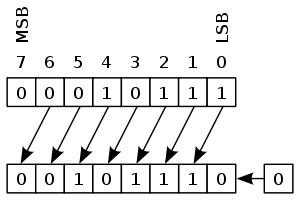
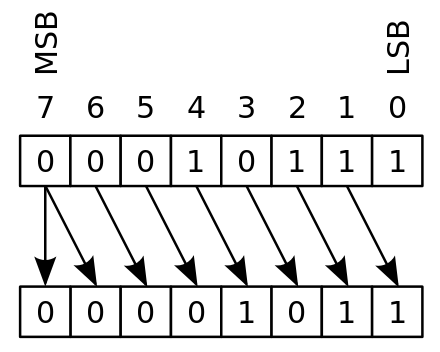

目录 [−]
本文介绍Go语言的表达式。
表达式代表一个值的计算， 计算通过运算符和函数应用在操作数上(operand)。
操作数代表表达式中的基本值。它可以字面量，标识符。 标识符表示常量、变量、函数、方法表达式、或者一个括号表达式。
空标识符“_”只能出现在赋值语句的左边。
包代码块中定义的标识符通过 package.identifier访问。
表达式的形式有多种，可以参看官方文档: Primary expressions。
以下都是合法的表达式：
|
|
重点介绍Go语言规范中的以下表达式。
Selector
假定x不是包名，selector表达式表示如下: x.f。
它表示f是x (或者*x)的字段或者方法。其中标识符f称为selector。
selector f可以是类型T的字段或者方法，也可以是T的匿名嵌套字段的字段和方法。 可以递归地通过匿名字段进行查找，匿名字段递归查找f的数量称之为它在T中的深度。T中声明的字段和方法的深度为0。
selector有以下特性：
1、对于类型为 T 或 *T的值x, 当 T 不是指针类型或者接口类型时，x.f 代表 T 的 最小深度的字段或者方法 f。 如果同一深度有多个f， 那么selector表达式就是错误的。
|
|
2、对于类型为I的值x, 如果I是接口类型，那么 x.f 代表 x的动态类型的实际方法 f。 如果 I 接口的方法集中没有方法f, 则selector表达式非法。
3、一个特例。如果x的类型是一个命名的指针类型，并且(*x).f代表字段f(不是方法),可以简写为 x.f。
4、其它情况 x.f 都是非法的。
5、如果 x是一个指针类型，它的值是 nil。则 x.f 会导致运行时panic。
6、如果x的类型I是接口类型，并且值为 nil， 则x.f会导致运行时panic。
我们首先定义两个类型T0、T1,分别包含一个方法M0和M1，类型参数分别为*T0、T1。
然后定义一个类型T2，嵌入T1和*T0，还包含一个方法M2，类型参数为*T2。
|
|
则下面的表达式都是合法的：
|
|
但是下面的表达式非法(违反规则3)：
|
|
方法表达式
如果M在类型T的方法集中，T.M可以当作一个普通的函数调用，它的第一个参数需要传入receiver的值。
考虑到下面的结构体S:
|
|
和变量 var s = S{"bird"},下面的6组表达式都是等价的：
|
|
类似地，(*S).M2也会产生下面的函数：
|
|
对于receiver为value receiver的方法, (*S).M1还会产生下面的方法：
|
|
注意这个方法会为传入的receiver创建一个值，这个方法不会覆盖传入的指针指向的值。
如果x的静态类型为T, M是T的方法集里面的一个方法。 则x.M称之为方法值(method value)。方法值是一个函数，参数和x.M的参数一样。T可以是接口类型或者非接口类型。
Go语言规定，一个指针可以调用value receiver的非接口方法：pt.M1等价于(*pt).M1。
而一个值可以调用pointer receiver的非接口方法:s.M2等价于(&s).M2,它会把这个值的地址作为参数。
因此，对于非接口方法，不管它的reeiver是poiter还是value，值对象和指针对象都可以调用：
|
|
注意，前面已经讲到，通过指针调用value receiver的方法不会改变指针指向的对象的值，因为它会复制一份value,而不是把自己的value值传入方法：
|
|
甚至，函数也可以有方法,比如常见的官方库中的HandlerFunc。
|
|
索引表达式
索引表达式a[x]可以用于数组、数组指针、slice、字符串和map。
对于非map的对象：
- 索引值x必须是integer类型或者未声明类型的类型，并且
0 <= x < len(a) - 常数索引值必须非负，而且可以表现为int类型的值
索引的以下内容你应该都很熟悉了，可以选择跳过去。
对于数组：
- 索引不能越界
- 越界的话会发生运行时panic
- a[x]是索引在x处的元素，索引值以0开始
对于数组指针
- a[x] 是 (*a)[x]的简写
对于slice类型S:
- x越界，运行时panic
- a[x]是索引在x处的元素，索引值以0开始
对于字符串类型：
- x不能越界
- x越界，运行时panic
- a[x]是索引在x处的非常量 byte值
- 不能给 a[x]赋值
对于map类型：
- x必须可以赋值map的键类型，参照上一章的类型赋值规则
- 如果map包含键为x的entry,那么a[x]就是值对象
- 如果map是nil或者map不包含这个entry, a[x]是值类型的零值
当然map类型还有一个特殊格式，就是可以同时返回x是否存在于map中：
|
|
如果x存在于map中，则v返回它的值，ok 为 true,否则 ok 为 false。
slice表达式
字符串、数组、数组指针、slice可以通过下面的方式得到一个子字符串或者slice:
|
|
当然其中low、high都可以忽略。默认low = 0, high = 操作数的最大长度。注意结果的范围是左闭右开的： a[low] <= …… < a[high],
|
|
对于数组、数组指针和slice (不包含字符串)，索引表达式还有下面的形式：
|
|
它和a[low:high]一样，产生同样的元素类型，同样长度和元素的slice,但是它会设置容量capacity,
产生的slice的容量为 max-low。在这个格式下，只有第一个索引low可以省略，默认为0。
索引的范围符合 0 <= low <= high <= max <= cap(a)。
变参
对于函数和方法中的最后一个参数是变参p，类型是...T的情况，p的类型f等价于[]T。
如果没有实际参数传给变参，它的值是nil。
你可以讲一个slice传递给变参，如果想将slice的元素作为变参的各个值传递的话，可以在slice后面加...:
|
|
加不加...是不一样的，比如下面的例子：
|
|
运算符
本节重要用于总结。
除了为移位运算符， 如果一个操作数是有类型的，另一个不是，则另一个会被转换成相同的类型。
移位操作的右边的运算符是无符号整数，或者可以转换成无符合整数的未声明的常量。
运算符优先级
++、--是语句，不是表达式， *p++等同于(*p)++。
运算符有5层优先级：
Precedence Operator
5 * / % << >> & &^
4 + - | ^
3 == != < <=> >=
2 &&
1 ||
算术运算符
算术运算符应用于整数、浮点数、复数， + 也可以应用于字符串。
位运算和移位运算只适用于整数。
+ sum integers, floats, complex values, strings - difference integers, floats, complex values * product integers, floats, complex values / quotient integers, floats, complex values % remainder integers & bitwise AND integers | bitwise OR integers ^ bitwise XOR integers &^ bit clear (AND NOT) integers << left shift integer << unsigned integer \>> right shift integer >> unsigned integer
^是异或操作。&^位清零操作，如果第二个操作数的二进制的某个位的值为1,那么对应的第一个操作数的位的值则设为0，也就是将第一个操作数上的相应的位清零。
|
|
对于移位操作，如果左边的操作符是无符号整数，则进行逻辑移位，如果左边的操作符是有符号整数，则进行的是算术移位。逻辑移位不考虑符号位，而算术移位要考虑符号位，这样能保证 移位操作 和 乘除的操作 一致。


|
|
参考:
一元操作符:
+x is 0 + x
-x negation is 0 - x
^x bitwise complement is m ^ x with m = "all bits set to 1" for unsigned x
and m = -1 for signed x
^x 在C、C#、Java语言中中符号 ~,在Go语言中用 ^。对于无符号整数来说就是按位取反，对于有符号的整数来说,
是按照补码进行取反操作的。-1的补码为11111111。
|
|
无符号整数的+、-、*、<<的操作的结果会取模2^n， 也就是溢出的位会被丢掉， 比如uint8类型的数 "255 + 2" 会等于 1。
有符号整数的+、-、*、<<的操作的结果的溢出也不会导致异常，但是结果可能不是你想要的，比如x < x+1并不总是成立。比如int8的两个值 "127 + 2 = -127"。
字符串也可以应用+、+=运算符：
|
|
比较运算符
== 等于 != 不等于 < 小于 <= 小于等于 > 大于 >= 大于等于
==、!=比较相等性， 可比较comparable，<, <=, >, >=是有序运算符, ordered。
- 布尔值: comparable
- 整数: comparable, ordered
- 浮点数: comparable, ordered
- 负数: comparable
- 字符串： comparable, ordered，根据字节比较
- 指针: comparable
- Channel: comparable
- 接口: comparable
- 一个非接口类型X的值x 可以和 一个接口类型T的值t进行比较: comparable
- struct: comparable 如果它的所有的字段都是comparable的话。
＊ 数组：comparable
两个接口比较的时候可能导致运行时panic， 如果接口的动态类型的值不可比较的话。
slice、map和函数值都不可以比较，但是它们可以和预定义的零值nil进行比较。
逻辑运算符
&& conditional AND p && q is "if p then q else false" || conditional OR p || q is "if p then true else q" ! NOT !p is "not p"
地址运算符
&x取址
*x取得指针指向的值
receive运算符
对于Channel类型的值ch, receive操作 <-ch的值代表从ch中取出的一个值。
ch的声明时应该允许receive操作。
这个操作会阻塞，直到有值收到。
从一个nil channel中receive会一直阻塞。
从closed channel中的receive会以及处理，返回零值。
从ch中receive也可以用下面的格式:
|
|
Order of evaluation
表达式的运算(评估)顺序。
包一级的变量声明中的表达式的运算顺序会根据它们的依赖，这个以后讲，其它的表达式的运算顺序都是从左向右计算。
比如一个函数内的下面的表达式:
|
|
它的计算顺序为f(), h(), i(), j(), <-c, g(), k(),但是计算索引y[],x[]的顺序并没有指定。
|
|
对于包一级的变量声明中的表达式：
|
|
顺序为 u(), sqr(), v(), f(), v(), g()。
下一章将介绍 类型转换(Conversion)、类型断言(type assertion) 和类型切换（type switch）